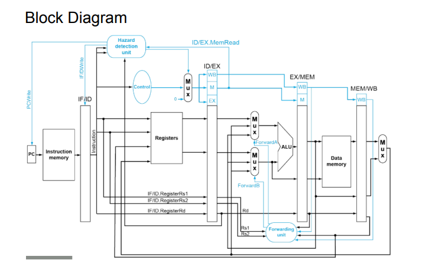

RISC-V Core
Five stages, four pipeline registers, and every hazard handled by hand: a processor written one wire at a time.
- Role
- Designer
- Year
- 2024
- ISA
- RISC-V (RV32I subset)
- Language
- Verilog HDL
- Pipeline
- IF · ID · EX · MEM · WB
- Code
- Source ↗
Run five instructions at once, and keep them in order.
A single-cycle CPU does one instruction per clock, and the clock has to be slow enough for the longest instruction. Pipelining splits the work into five stages, like an aqueduct carrying water in sections, so five instructions are in flight at once and the clock only has to wait for one stage.
The catch is that instructions depend on each other. An add may need a value that a lw three slots ahead hasn't loaded yet. Making a pipeline correct means seeing every one of those conflicts coming, and that's what most of this project was about.

Turn forwarding off and watch the stalls appear.
This is the program I used to test the hazard logic, laid out cycle by cycle. With forwarding on, results go straight from the EX/MEM and MEM/WB registers back to the ALU, and the only stall left is the unavoidable load-use bubble. With forwarding off, every dependent instruction waits in decode for write-back.
The control units that keep it correct.
Stall & bubble
Detects a load whose destination register is needed by the very next instruction. It freezes the PC and IF/ID, and puts a NOP into ID/EX.
Bypass paths
Compares source registers in EX against the destinations in EX/MEM and MEM/WB, and steers the ALU input muxes to whichever value is newest.
Resolve & flush
Evaluates branch conditions, redirects the PC, and flushes the instructions that were fetched down the wrong path.
sepc · scause
Supervisor exception registers save the faulting PC and the cause, so the core can trap and return cleanly.
Decode
Turns opcode and function fields into the control signals that travel down the pipeline with each instruction.
I · S · B · U · J
Sign-extends and reshuffles the immediate bits for every RISC-V instruction format.
Repository layout
cpu/
├── Control And Top Module/
│ ├── CPU // top level: wires the stages together
│ ├── branchunit
│ ├── forwardingunit
│ ├── hazarddetectionunit
│ ├── scause · sepc // trap state
├── Stages & Registers/
│ ├── IF_STAGE → IF_ID_REG
│ ├── ID_STAGE → ID_EXE_REG
│ ├── EXE_STAGE → EXE_MEM_REG
│ ├── MEM_STAGE → MEM_WB_REG
│ └── WB_STAGE
└── Low Level Modules/
├── alu · control_unit · immediate_gen.v
├── register_file.v · pc_register.v
└── instruction memory.v · data_memory.v